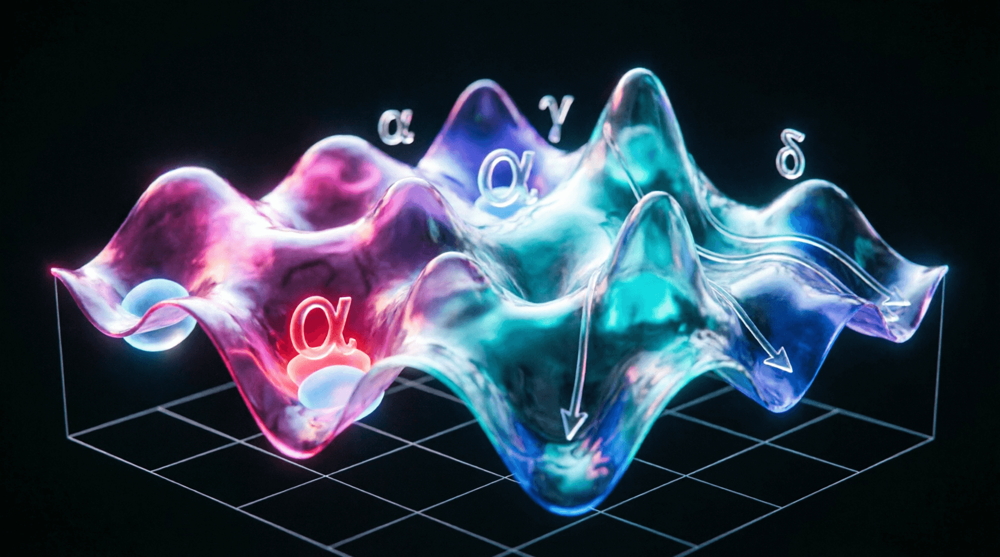

Урок 4: Кастомные функции потерь (Loss Functions)
ML-инженер • Архитектура нейросетей с нуля
Функция потерь (Loss Function) определяет математический ландшафт, по которому оптимизатор ведет нейросеть к глобальному минимуму. Стандартных лоссов (MSE, Cross-Entropy) часто не хватает для специфических задач хардкорной разработки. Этот урок научит вас проектировать кастомные функции потерь на чистом тензорном коде.
backward() не сможет рассчитать градиенты. Любое ветвление (например, через if/else) должно быть заменено на логические маски или тензорные функции PyTorch.
Представьте, что вы обучаете нейросеть находить редкие дефекты на производстве (1 бракованная деталь на 10 000 нормальных). Обычная бинарная кросс-энтропия (BCELoss) заставит модель просто всегда говорить «дефектов нет», выдав ложную точность в 99.99%. Чтобы исправить это поведение, инженеры модифицируют формулу ошибки.
Focal Loss — это эволюция кросс-энтропии, которая снижает вклад легко классифицируемых (уверенных) примеров и заставляет модель фокусироваться на сложных, редких объектах. Формула вводит модулирующий множитель с параметром сглаживания γ:
Если модель уверена в правильном классе (вероятность p_t близка к 1), то множитель (1 - p_t)^γ стремится к 0, обнуляя ошибку для этого примера.
Правильный способ создания кастомного лосса в рамках экосистемы PyTorch — наследование от базового класса torch.nn.Module.
import torch
import torch.nn as nn
import torch.nn.functional as F
class FocalLoss(nn.Module):
def __init__(self, alpha=1.0, gamma=2.0, reduction='mean'):
super(FocalLoss, self).__init__()
self.alpha = alpha
self.gamma = gamma
self.reduction = reduction
def forward(self, inputs, targets):
# inputs: логиты модели (выходы без софтмакса) формы [B, C]
# targets: истинные индексы классов формы [B]
# Вычисляем логарифм вероятностей через численно стабильный log_softmax
log_prob = F.log_softmax(inputs, dim=-1)
prob = torch.exp(log_prob)
# Собираем только те вероятности, которые соответствуют правильным классам
gathered_log_prob = log_prob.gather(dim=-1, index=targets.unsqueeze(-1)).squeeze(-1)
gathered_prob = prob.gather(dim=-1, index=targets.unsqueeze(-1)).squeeze(-1)
# Математический расчет Focal Loss
loss = -self.alpha * ((1 - gathered_prob) ** self.gamma) * gathered_log_prob
# Агрегация батча (усреднение или суммирование)
if self.reduction == 'mean':
return loss.mean()
elif self.reduction == 'sum':
return loss.sum()
return lossПри написании математических операций, содержащих логарифмы (log) или экспоненты (exp), легко получить ошибку NaN (Not a Number) из-за деления на ноль или переполнения типов данных.
torch.log(torch.softmax(x)). Всегда используйте готовую функцию F.log_softmax(x). Внутри неё на уровне C++ кода применяется трюк Log-Sum-Exp, защищающий вычисления от потери точности.
Реализуйте кастомную функцию потерь Huber Loss (также известную как Smooth L1 Loss). Математическая логика: если абсолютная ошибка предсказания меньше заданного порога δ, лосс должен вести себя как квадратичная ошибка (MSE). Если ошибка больше δ — лосс переходит в линейную ошибку (MAE). Используйте логические маски (например, torch.where) для реализации ветвления без разрушения градиентного графа.
import torch
def custom_huber_loss(preds, targets, delta=1.0):
"""
Реализация Huber Loss (Smooth L1).
Если |error| < delta -> 0.5 * error^2
Если |error| >= delta -> delta * (|error| - 0.5 * delta)
"""
# 1. Вычислите ошибку
error = preds - targets
# 2. Вычислите абсолютную ошибку
abs_error = torch.abs(error)
# 3. Используйте torch.where для выбора формулы в зависимости от delta
# ВАШ КОД ЗДЕСЬ
return loss
# --- Тестирование ---
if __name__ == "__main__":
preds = torch.tensor([1.0, 2.0, 5.0], requires_grad=True)
targets = torch.tensor([1.5, 2.0, 10.0])
# delta=1.0. Ошибки: 0.5 (малая), 0 (малая), 5.0 (большая)
loss = custom_huber_loss(preds, targets, delta=1.0)
print("Huber Loss:", loss.item())
loss.backward()
print("Градиенты:", preds.grad)import torch
def custom_huber_loss(preds, targets, delta=1.0):
error = preds - targets
abs_error = torch.abs(error)
# Условие: где ошибка меньше дельты?
mask = abs_error < delta
# MSE часть (квадратичная)
quadratic = 0.5 * error ** 2
# MAE часть (линейная)
linear = delta * (abs_error - 0.5 * delta)
# Выбираем значение в зависимости от маски
loss = torch.where(mask, quadratic, linear)
return loss.mean()
if __name__ == "__main__":
preds = torch.tensor([1.0, 2.0, 5.0], requires_grad=True)
targets = torch.tensor([1.5, 2.0, 10.0])
loss = custom_huber_loss(preds, targets, delta=1.0)
print("Huber Loss:", loss.item()) # ~2.375
loss.backward()
print("Градиенты:", preds.grad)
# Градиент будет 0.5 для первой ошибки (MSE),
# и sign(error)*delta для большой ошибки (MAE)В Python мы пишем if x > 0: ... else: .... В PyTorch такие конструкции разрывают граф вычислений. Вместо этого мы используем маски.
result = torch.where(condition, x, y)
torch.where дифференцируема. PyTorch знает, как вычислять градиенты для обоих вариантов (x и y), и передает градиент только через те элементы, которые были выбраны.
Приложение бесплатное. Было и останется.
Если проект помог вам или вашим близким — можете поддержать разработку добровольным переводом.
❤️ Спасибо за поддержку!
Перейти в каталог
